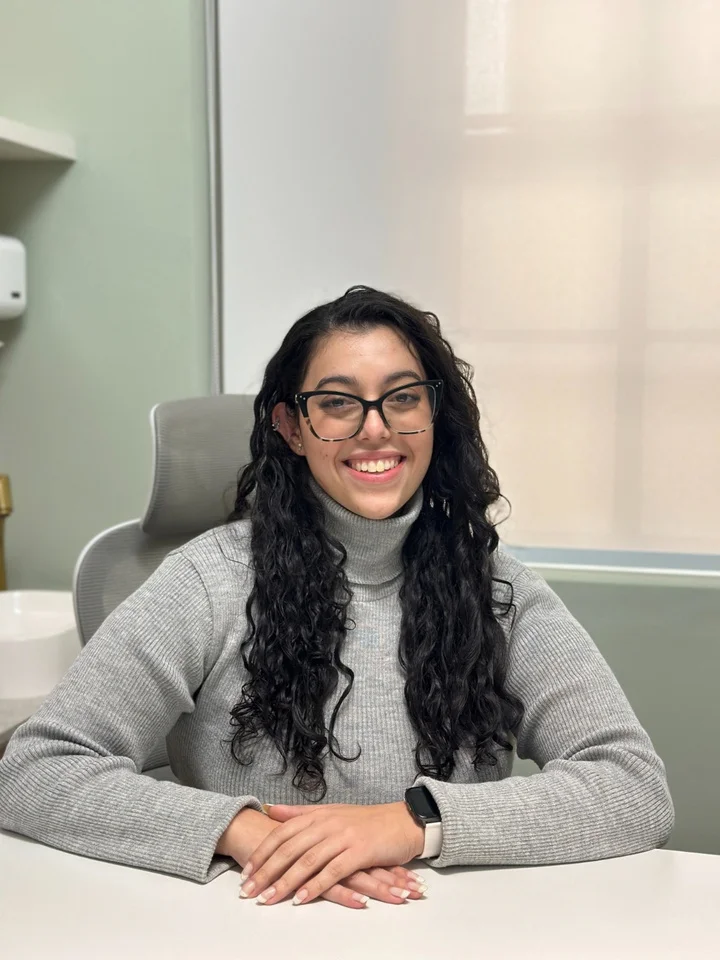

ADULTOS E IDOSOS
Psicoterapia
individual
Um espaço para falar sobre suas emoções, experiências e conflitos, construindo sentidos para o que atravessa a sua história.
PSICOLOGIA & ESCUTA PSICANALÍTICA
Psicóloga para adultos, idosos, casais e famílias. Acompanhamento para compreender suas emoções e relações, respeitando o seu tempo.
Agendar atendimentoPouso Alegre · Paraisópolis · Poços de Caldas · Online

ATENDIMENTOS
ADULTOS E IDOSOS
Um espaço para falar sobre suas emoções, experiências e conflitos, construindo sentidos para o que atravessa a sua história.
RELAÇÕES E VÍNCULOS
Escuta para compreender conflitos, expectativas e repetições na relação.
Uma oportunidade de dar voz ao que nem sempre consegue ser dito.
PARENTALIDADE E CUIDADO
Acolhimento das angústias de mães, pais e cuidadores.
Um olhar para os desafios de criar filhos e para as histórias que influenciam esse cuidado.
CONVIVÊNCIA E HISTÓRIA
Um espaço para reconhecer dinâmicas e heranças familiares, compreender dificuldades de convivência e pensar novas possibilidades de relação.
QUEM VAI ESCUTAR VOCÊ
Sou psicóloga, formada pela PUC Minas – Campus Poços de Caldas.
Na escuta psicanalítica, você pode falar livremente sobre o que sente e vive, inclusive sobre o que ainda é difícil de compreender.
Meu trabalho é acompanhar essa elaboração, construindo sentidos junto com você.
Atualmente, sou pós-graduanda em Terapia de Família e de Casal.
Conheça também meu InstagramCOMO FUNCIONA
Começar a terapia pode trazer dúvidas. Conheça um pouco do caminho que vamos construir.
Conversamos pelo WhatsApp sobre disponibilidade, modalidade e funcionamento dos atendimentos.
Um momento para conhecer sua demanda, acolher suas questões e conversar sobre o processo.
Combinamos a frequência dos encontros e damos continuidade às questões que surgem ao longo do acompanhamento.
PRESENCIAL E ONLINE
Escolha o local ou a modalidade que melhor se encaixa na sua rotina.
Clínica Inovaes
Desenvolvimento e Aprendizagem
Rua Monsenhor José Paulino, 259Clínica RM Reviva Saúde
Rua Dr. Simões de Almeida, 22Sonar Clínica Saúde da Mente
Av. Champagnat, 863, Sala 107Para quem prefere ou precisa realizar o acompanhamento à distância, com encontros por videochamada.
Conversar sobre atendimento onlineAtendimentos com horário agendado.
DÚVIDAS FREQUENTES
Algumas respostas para ajudar você a dar esse primeiro passo.
Falar com Ana Elisa CamargoAs sessões duram, em média, 50 minutos e podem acontecer semanalmente ou quinzenalmente, conforme a demanda e a disponibilidade do paciente.
Um ambiente tranquilo e privado, uma conexão estável à internet e um dispositivo com câmera e microfone.
Os detalhes de acesso são combinados antes do encontro.
Entre em contato pelo WhatsApp profissional para conhecer a disponibilidade e as condições do acompanhamento.
VAMOS CONVERSAR?
Se você sente que é o momento, podemos conversar
sobre como começar o seu acompanhamento.
UM FIO DE CADA VEZ
Na escuta, podemos acolher os nós, compreender os caminhos
e construir novos sentidos. No seu tempo.